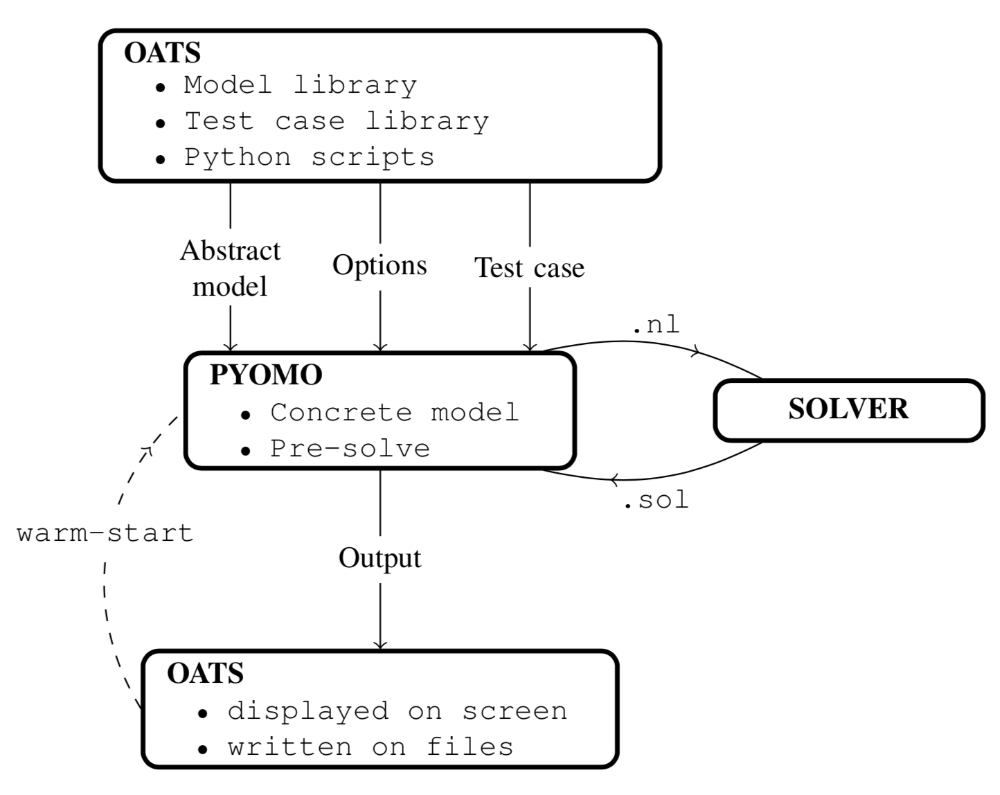

Introduction to OATS¶
Optimisation and Analysis Toolbox for power Systems (OATS) is a high-level modelling and simulation tool for power system analysis, developed at the University of Strathclyde. OATS is a collection of optimisation models and Python scripts for solving and analysing a range of power system analysis problems. These problems include: load flow, optimal power flow (AC, DC and security constrained) and unit commitment. OATS can be extended to solve more bespoke problems such as balancing markets, multi-period, and stochastic optimsation.
Architecture¶
The optimisation models in OATS are written in an algebraic modelling language (AML) called PYOMO. An algebraic modelling language provides a convenient interface between an optimisation model and a solver where the problem is eventually solved. OATS also contains a set of Python scripts that handle the flow of information between OATS, PYOMO and a solver.
{kind=link}
In OATS the optimisation models are written in PYOMO, the test case data is specified using a spreadsheet. OATS passes user-specified optimisation model, a test case and a set of options to PYOMO. PYOMO creates an instance (a concrete model). The concrete model is then passed onto a solver in the form of a .nl binary file. The solver returns a solution in a binary format .sol that is processed by PYOMO. OATS reads the output and write it in a spreadsheet.
The optimisation problems can be warm-started meaning that a user-specified (or output of another model) is used as an initial guess for gradient-based solvers. This feature is particularly useful for running batch simulations where the speed of convergence of a solution if important.
Citation¶
Waqquas Bukhsh. (2019, September 5). bukhsh/oats: OATS release (Version v1.0.1). Zenodo. http://doi.org/10.5281/zenodo.3387594.